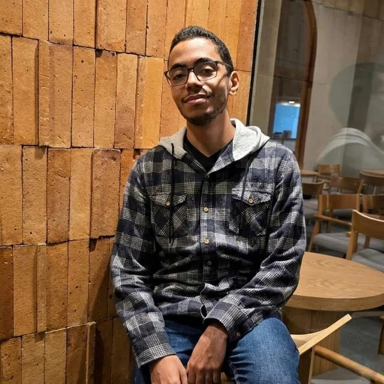
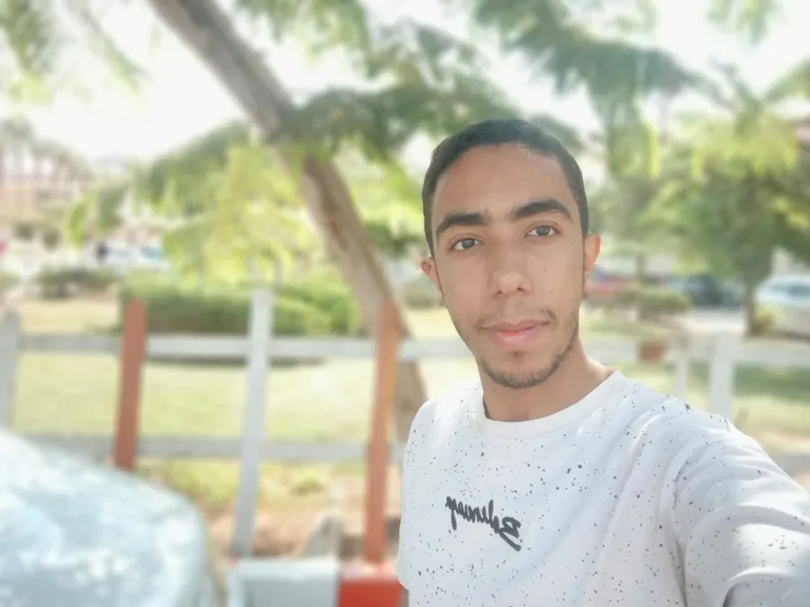

01 / 05
Research Writing & Integration
Muhammad Bakr Mahmoud
Sections 3–4 · Final paper integration · Unified notebooks
STUDENT ID814037392
From the original dataset to the final research experience, every contribution brought the project closer to something that could be studied, tested and understood.
An imagined future prototype as a studio scene: five researchers gathered around a water-monitoring enclosure. The real project currently includes dataset analysis, a trained demonstration model and simulated 3D sensors.

Sections 3–4 · Final paper integration · Unified notebooks
Dataset audit · Missing values · Target balance

03 / 05Stratified split · Imputation · Scaling · Hardware study

04 / 05Histograms · Boxplots · Correlation · Sensor mapping
Introduction · Architecture · Scope & limitations